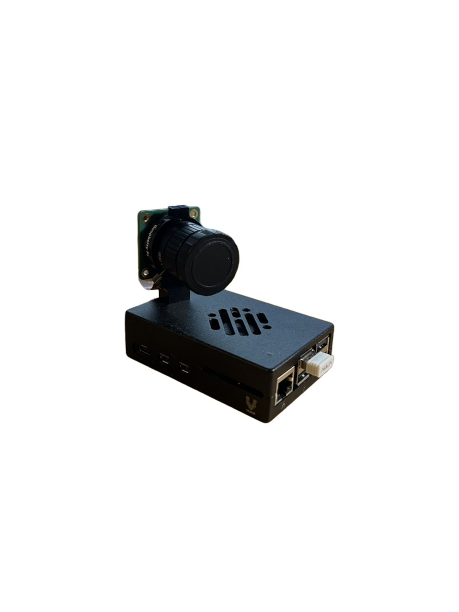
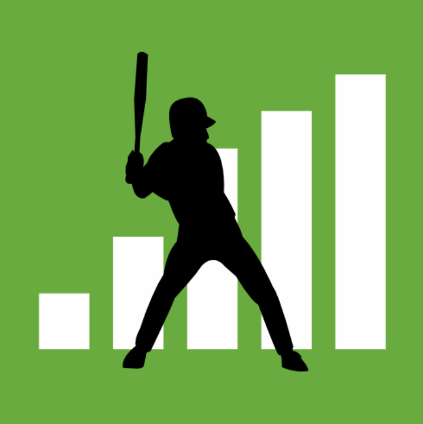
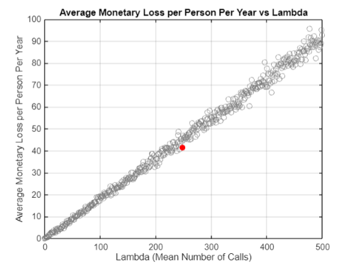

Engineering Projects
Software Projects
Software

AI Fridge Camera
A OpenAI based module that tracks what Items go in and out of a fridge and provides recipies to reduce food waste
Learn More
Software

Baseball Salary Scraper
A python script that scrapes both baseball salaries and stats from FanGraphs and Spotrac.
Learn More
Software

Call Center Scam Simulation
A Matlab script that takes note of SIR model and networks to predict call center money loss.
Learn MoreElectrical Projects
Electrical

Custom Mini Hoop
A custom mini basketball hoop with LEDs, Ultrasonic sensor, and buzzer all controlled by a Arduino Uno.
Learn More
Electrical

Baja Ride Height Module
A custom PCB and sensor system for measuring ride height data for the Olin Baja team's off-road vehicle.
Learn More
Electrical
Hopper Project
A mechanical design project inspired by the click beetle's hopping mechanism, applying engineering principles to create a unique hopping device.
Learn MoreHopper Project


In the Design Nature engineering course, I developed a mechanical hopper inspired by the click beetle's unique jumping mechanism. The project began with field observations of natural hoppers, followed by systematic application of engineering design principles through multiple prototype iterations.
My final design utilized principles of potential energy storage and center of mass manipulation. Using elastic rubber tubing, the hopper stored energy that was released through a precision-timed trigger mechanism. This caused a controlled collision between two masses, generating both an audible clap and the kinetic force needed to propel the device upward.
This project demonstrated practical applications of biomimicry in engineering and reinforced fundamental concepts of energy transfer, mechanical advantage, and iterative design methodology. The successful implementation validated how biological systems can inform innovative engineering solutions.
Customized Mini Hoop


I designed and built an interactive mini basketball hoop system using Arduino technology that provides real-time feedback for successful shots. The system employs an ultrasonic sensor to detect ball passage through the hoop, triggering synchronized LED animations and audio feedback.
The implementation involved full-stack embedded development using C++ in the Arduino IDE, with emphasis on efficient state management and responsive sensor data processing. Key technical aspects include integration of the FastLED library for dynamic lighting effects, interrupt-driven audio generation, and precision timing controls for reliable detection.
During standby periods, the system runs custom-programmed ambient light patterns to maintain visual engagement. This project demonstrates practical application of embedded systems design, sensor integration, and user experience engineering to transform a standard object into an interactive, technology-enhanced product.
Baja Ride Height Module


For the Olin Baja racing team, I contributed to developing a precision ride height measurement system to analyze suspension performance under extreme driving conditions. This data acquisition module was essential for validating design calculations and optimizing suspension performance during test runs.
The technical implementation featured a custom-designed PCB interfacing with angular displacement sensors, with data processing handled by Raspberry Pi Pico microcontrollers. The system utilized Bluetooth Low Energy (BLE) for wireless data transmission to a central analysis computer. I developed firmware that performed multi-step signal processing: converting voltage readings to resistance values, calculating angular displacement, and ultimately deriving physical measurements of ride height and suspension forces.
This instrumentation system provided the suspension engineering team with quantitative performance data that directly informed design improvements for subsequent vehicle iterations. The project integrated electrical engineering, embedded systems programming, and mechanical analysis to create a practical solution for real-world automotive testing applications.
AI Fridge Camera
I am developing an AI-powered kitchen management system to address household food waste, a significant global environmental challenge. This system utilizes computer vision technology to automatically detect and log food items entering and exiting a refrigerator, creating a comprehensive digital inventory with timestamp tracking.
The technical implementation combines a camera module with OpenAI's computer vision capabilities to accurately identify food items in real-time. The system employs a custom algorithm that tracks item freshness based on entry dates and typical shelf life, then proactively generates recipe recommendations that prioritize ingredients approaching expiration.
This ongoing project demonstrates application of artificial intelligence to practical sustainability challenges. By providing actionable information about available ingredients and suggesting creative ways to use them, the system aims to significantly reduce household food waste while simplifying meal planning for users.
Baseball Contract and Stat Scraper
I developed a comprehensive data acquisition tool to analyze the unique relationship between performance metrics and salary structures in Major League Baseball, the only major American sport without a salary cap. This project addresses the challenge of efficiently accessing and correlating disparate data sources for sports analytics research.
The technical implementation uses Python with the Requests and BeautifulSoup libraries to systematically extract and parse data from multiple sources, including FanGraphs and Spotrac. The automation script handles authentication challenges, pagination, and robust error handling while organizing the data into clean, analysis-ready formats. Visualization capabilities were implemented using Matplotlib to generate insightful representations of performance-to-compensation ratios.
This project demonstrates practical application of web scraping techniques, data pipeline development, and statistical analysis. The resulting tool enables efficient, on-demand analysis of player valuation metrics, providing insights into team spending efficiency and contract value assessment across the league.
Call Center Scam Simulation

For my Model and Simulation course, I developed a statistical simulation system to model the financial impact of fraudulent call center operations. This project applied mathematical modeling techniques to quantify and predict the economic consequences of scam activities, providing insights into a significant but under-studied societal problem.
The technical implementation leveraged MATLAB to create a multi-distribution modeling framework incorporating three probability distributions: Poisson distribution to model the frequency of outbound calls, negative binomial distribution to simulate successful scam conversion rates, and normal distribution to represent the financial loss per victim. This approach enabled accurate prediction of aggregate financial impacts across diverse scenarios.
Through this project, I demonstrated practical application of stochastic modeling, probability theory, and computational simulation techniques. The resulting model provides a quantitative framework for understanding scam operations and could potentially inform policy and intervention strategies designed to combat such fraudulent activities.